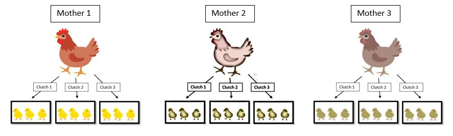
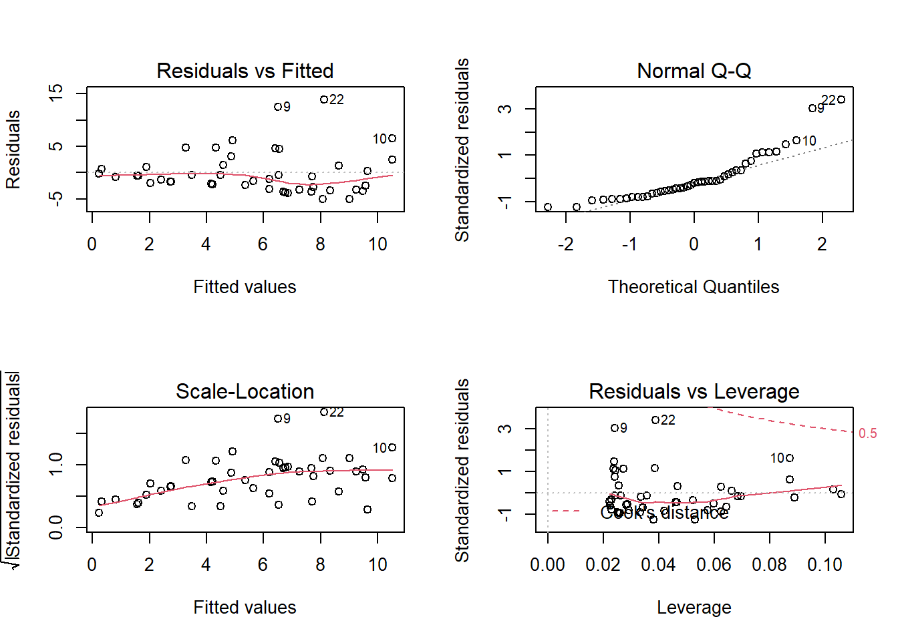
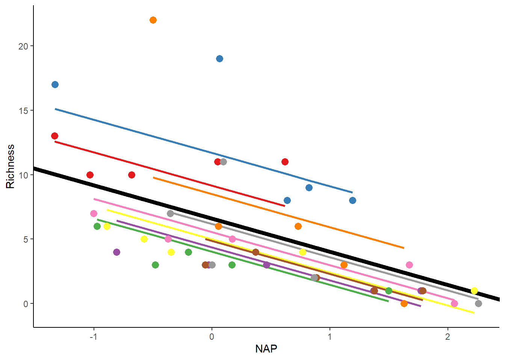
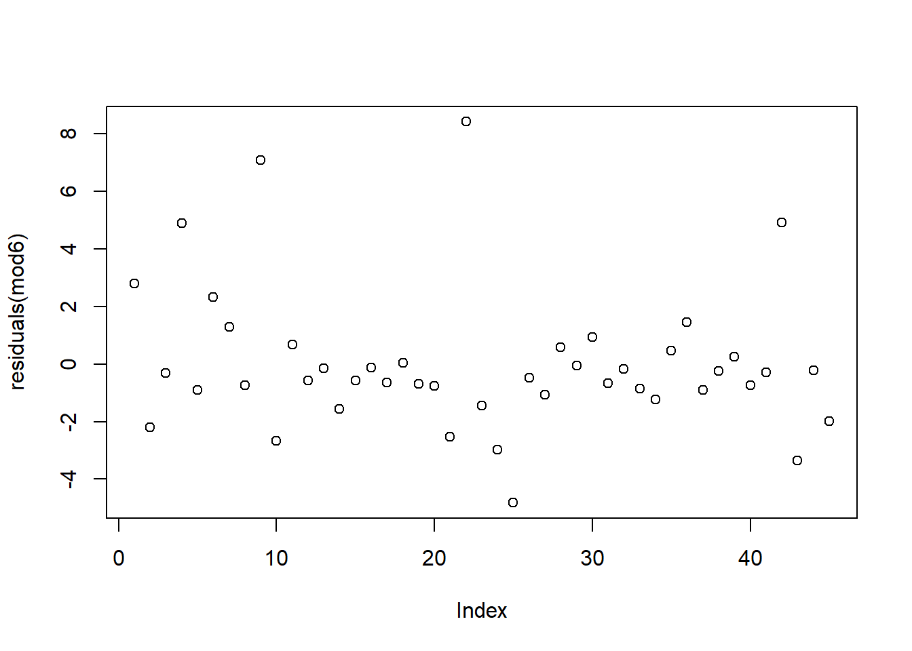
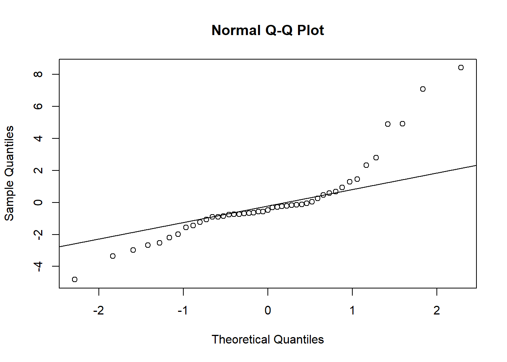
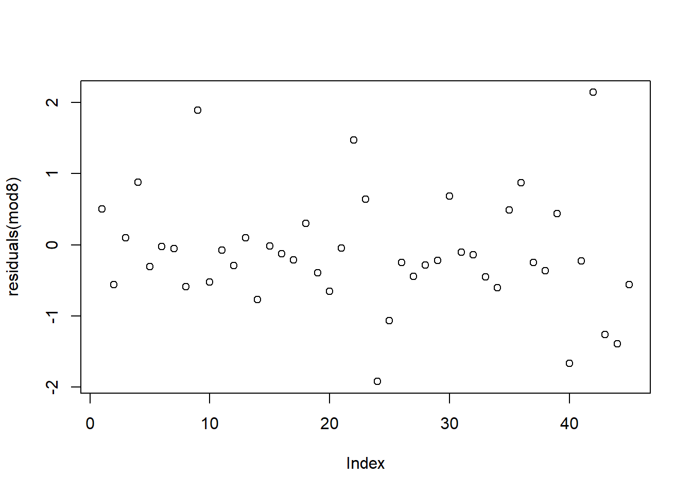
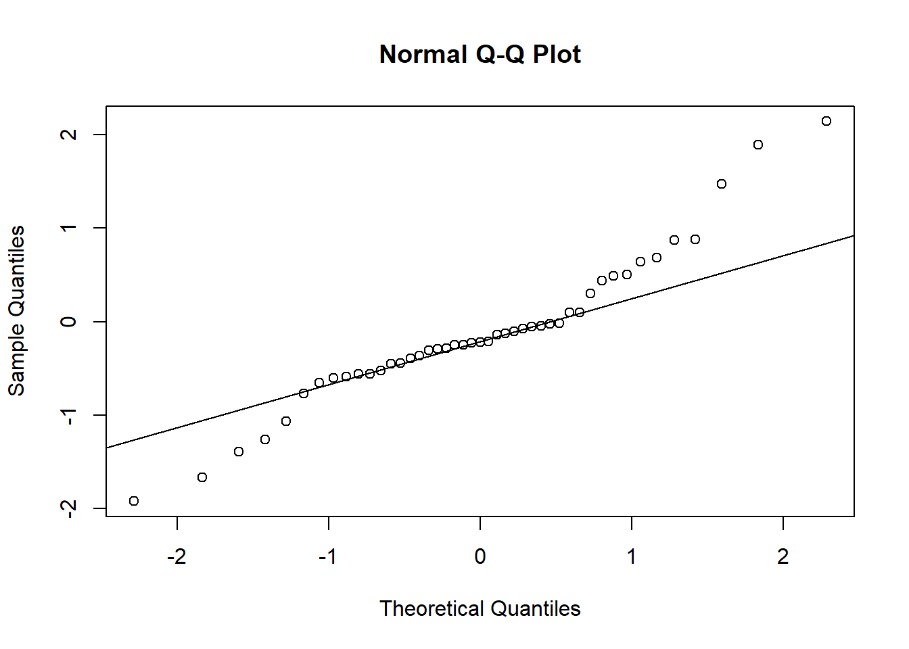

Mixed Effects Modelling
Fall 2021
#_____________________________________#
# NRES 746, Fall 2021 #
# Diethelm, McKinnon, Mizell #
# University of Nevada, Reno #
#_____________________________________#
#_____________________________________#
#### Mixed Effects Models (MEMs) ####
#_____________________________________#Here is the download link for the R script for this lecture: Mixed Effects Models script
Mixed effects models (MEMs): What are they anyway?
Mixed effects models are a class of models that build on linear models or generalized linear models, with observations measured within discrete groups. These models take into account various factors common in ecological data such as non-independence, heterogeneity, and non-linearity.
While there are no hard and fast rules for how to conduct mixed models, we will be providing some guidelines. We will also attempt to define the required jargon, despite the these definitions being highly contested.
There are two types of effects in mixed modeling:
Random effects are the discrete groupings which are variable or the source of random variability within the dataset. These are often factors that represent a random factor sampled of a larger population (such as field sites, genotype, temporal blocks used in a study).
Fixed effects are constant and the factors that are directly measured in the experiment, but can have multiple levels.
Why use MEMs?
Many models or statistical tests have underlying assumptions of independence. Non-independence within or among your data can lead to errors in modelling and skew your results. Mixed models can allow you to explicitly model the lack of independence in the data. Furthermore, using random effects can deal with issues of pseudoreplication.
Non-independent data includes: time series, repeated measurements from same specimens, hierarchical data, longitudinal data, as well as blocked experiments
Example (from Harrison et al. 2018 PeerJ):
If we measured several chicks from the same clutch, and several clutches from different females, or repeated measurements of the same chick’s growth rate over time, then we have a time series of non-independent data.
We may expect that measurements within a statistical unit (a female’s clutch) might be more similar than measurements from different units. We can account for this by using the parent ID or chick ID as a random variable in a mixed model.

Under the same idea of accounting for non-independence, your parameter estimate will be more accurate. Specifically, how the model treats the predictors is different for fixed and random effects (hold on for now we’ll explain this in depth later with actual data).
There are also some cons to using MEMs. For instance, there are issues with convergence, predictions for random effects is tricky, there is some difficulty in interpreting the model output due the complexity of the model, and finally you can not directly test a hypothesis that groups are different if they are treated as random effects (you only get one variance estimate).
When to use a random effect?
Random effects are useful when you want to quantify the variability across groups, make predictions for unobserved groups, or combine information across groups.
They can represent a grouping that was randomly sampled from a larger population, a categorical variable that needs to be accounted for but is not a treatment variable (e.g., subject identity, site location, time) > 4 groups (fitting the standard deviation requires at least 3 individuals per level), or unbalanced groups.
Random effects allow for shrinkage:
The estimate of the effect for each group computed from a linear mixed model is “pushed” towards the grand mean effect compared to when we fit a separate linear model to each group’s data.
Group-level estimates are shrunk towards the mean slope. The less data we have from a given subject, the greater the shrinkage or partial pooling.
This means that the group’s effect estimate will be based on the more abundant data, this also helps with unbalanced datasets.
What packages are available in R for MEMs?
lme4 An older modeling system and has less tools. Some suggests this is better with temporal data
nlme New modeling system and has large toolbox than lme4 and offers ability to make models more complex
glmmTMB For zero inflated data, when you have many zeros such as in surveys or for specific model comparisons (more on that later)
Syntax for MEMs:
Random (non-fixed) intercept only model:
mixed_model_intercept <- lmer(Response ~ Fixed_Predictor + (1|Random_Predictor), data = data, REML = FALSE)
Random (non-fixed) slope and intercept model:
mixed_model_intercept&slope <- lmer(Response ~ Fixed_Predictor + (1+ Fixed_Predictor|Random_Predictor), data = data, REML = FALSE)
mixed_model_intercept&slope <- lmer(Response ~ Fixed_Predictor + (Fixed_Predictor|Random_Predictor), data = data, REML = FALSE)
We’ll show this with actual data and graphs shortly.
General approach and steps to using MEMs:
- Start with data exploration and looking at patterns in the data
- Begin with the most complex model and test (include interactions, random intercept, etc) by creating other models that are less complex
- Run models and look at their AIC, BIC, and LogLik scores using anova(model 1, model 2….model n)
- Lower values are better for AIC and BIC (with less than 2 unit differences models are considered to be equally good)
- Similarly, LogLik is negative so less negative values are better
- Check models for convergence
- If there are convergence issues then scaling or centering the covariances may help
- Or, use the simplified model instead
- Explore models that remain for their basic residual distributions using plot(model) and other functions, testing their validity, and exploring any warnings
Some argument to always center your data and residuals, bolker mentioned running only adjusted residuals in his models
Load example dataset:
##load packages
library(lme4)
library(nlme)
library(glmmTMB)
library(ggplot2)##RIKZ dataset
#as described in Zuur et al. (2007) and Zuur et al. (2009)
##download data to follow along:
#rikz_data <- "https://uoftcoders.github.io/rcourse/data/rikz_data.txt"
#download.file(rikz_data, "rikz_data.txt")
rikz_data <- read.table("rikz_data.txt", header = TRUE, sep="\t")Explanation of the data set:
There are 9 intertidal areas (denoted ‘Beach’)
At each beach the researchers sampled five sites (denoted ‘Site’)
Research also noted abiotic variables (exposure and NAP) and calculated the species richness of macro-fauna
‘Richness’ refers to the total number of aquatic invertebrate species found at a given site
‘NAP’ refers to the height of the sampling location relative to the mean sea level.
‘Exposure’ refers to physical components of the site as experienced by the macro-fauna as example wave action and length of surf zone
Our question is: “What is the influence of NAP on species richness?”

Modeling the data:
rikz_data$Beach <- as.factor(rikz_data$Beach)
str(rikz_data)## 'data.frame': 45 obs. of 5 variables:
## $ Richness: int 11 10 13 11 10 8 9 8 19 17 ...
## $ Exposure: int 10 10 10 10 10 8 8 8 8 8 ...
## $ NAP : num 0.045 -1.036 -1.336 0.616 -0.684 ...
## $ Beach : Factor w/ 9 levels "1","2","3","4",..: 1 1 1 1 1 2 2 2 2 2 ...
## $ Site : int 1 2 3 4 5 1 2 3 4 5 ...##This code is adapted from: https://uoftcoders.github.io/rcourse/lec08-linear-mixed-effects-models.html#accounting_for_non-independence
# Start with a linear model:
lm1 <- lm(Richness~ NAP, data = rikz_data)
summary(lm1)##
## Call:
## lm(formula = Richness ~ NAP, data = rikz_data)
##
## Residuals:
## Min 1Q Median 3Q Max
## -5.0675 -2.7607 -0.8029 1.3534 13.8723
##
## Coefficients:
## Estimate Std. Error t value Pr(>|t|)
## (Intercept) 6.6857 0.6578 10.164 5.25e-13 ***
## NAP -2.8669 0.6307 -4.545 4.42e-05 ***
## ---
## Signif. codes: 0 '***' 0.001 '**' 0.01 '*' 0.05 '.' 0.1 ' ' 1
##
## Residual standard error: 4.16 on 43 degrees of freedom
## Multiple R-squared: 0.3245, Adjusted R-squared: 0.3088
## F-statistic: 20.66 on 1 and 43 DF, p-value: 4.418e-05Coming back to our question “How does NAP influence species richness”, NAP does appear to be significantly associated with richness based on the model output above.
But, first we have to check that the model is fitting the data.
Let’s start with diagnostic plots for the residuals against the fitted values and a QQ-plot.
# Check model assumptions.
par(mfrow=c(2,2))
plot(lm1)
#The QQ plot looks okay, but first panel suggests that the model assumption for
#homogeneity is violated.
#Here we see an increasing variance in the residuals with increasing fitted
#values.
#For now, we will ignore these violations of the model assumptions to explore
#mixed-effects modelling strategies on untransformed data.
#Furthermore, we also know the observations in these data are not independent.Now let’s look at beach as a fixed predictor to illustrate why it’s better as a random effect:
lm2 <- lm(Richness ~ NAP + Beach, data = rikz_data)
summary(lm2)##
## Call:
## lm(formula = Richness ~ NAP + Beach, data = rikz_data)
##
## Residuals:
## Min 1Q Median 3Q Max
## -4.8518 -1.5188 -0.1376 0.7905 11.8384
##
## Coefficients:
## Estimate Std. Error t value Pr(>|t|)
## (Intercept) 9.8059 1.3895 7.057 3.22e-08 ***
## NAP -2.4928 0.5023 -4.963 1.79e-05 ***
## Beach2 3.0781 1.9720 1.561 0.12755
## Beach3 -6.4049 1.9503 -3.284 0.00233 **
## Beach4 -6.0329 2.0033 -3.011 0.00480 **
## Beach5 -0.8983 2.0105 -0.447 0.65778
## Beach6 -5.2231 1.9682 -2.654 0.01189 *
## Beach7 -5.4367 2.0506 -2.651 0.01196 *
## Beach8 -4.5530 1.9972 -2.280 0.02883 *
## Beach9 -3.7820 2.0060 -1.885 0.06770 .
## ---
## Signif. codes: 0 '***' 0.001 '**' 0.01 '*' 0.05 '.' 0.1 ' ' 1
##
## Residual standard error: 3.06 on 35 degrees of freedom
## Multiple R-squared: 0.7025, Adjusted R-squared: 0.626
## F-statistic: 9.183 on 9 and 35 DF, p-value: 5.645e-07The model is estimating a separate effect for each beach (with 8 total as 1 is used as the reference). This is drastically reducing our degrees of freedom, which gives less ability to detect relationships that exist.
However, we need to account for non-independence among sites within a beach, so let’s try putting beach as a random effect.
First, we will build the simpler intercept-only model and then a model where the slopes are allowed to vary as the more complicated model.
#Q: What is the influence of NAP on species richness, while accounting for
#variation within beaches?
# Although a Poison might work well here given that richness a count of species,
# we will use a Gaussian distribution to keep things simple
#The (1|Beach) is the random effect term, where the 1 denotes this is a
#random-intercept model and the term on the right of the | is a nominal variable
#(or factor) to be used as the random effect.
#This model is fit using maximum likelihood, rather than restricted maximal
#likelihood by specifying REML = FALSE
#If your data are balanced (i.e., similar sample sizes in each factor group) and
#your random effects are not nested, then you can set REML to FALSE to use
#maximum likelihood.
mem.intercept <- lmer(Richness ~ NAP + (1|Beach), data = rikz_data, REML = FALSE)
summary(mem.intercept)## Linear mixed model fit by maximum likelihood ['lmerMod']
## Formula: Richness ~ NAP + (1 | Beach)
## Data: rikz_data
##
## AIC BIC logLik deviance df.resid
## 249.8 257.1 -120.9 241.8 41
##
## Scaled residuals:
## Min 1Q Median 3Q Max
## -1.4258 -0.5010 -0.1791 0.2452 4.0452
##
## Random effects:
## Groups Name Variance Std.Dev.
## Beach (Intercept) 7.507 2.740
## Residual 9.111 3.018
## Number of obs: 45, groups: Beach, 9
##
## Fixed effects:
## Estimate Std. Error t value
## (Intercept) 6.5844 1.0321 6.380
## NAP -2.5757 0.4873 -5.285
##
## Correlation of Fixed Effects:
## (Intr)
## NAP -0.164Notice the model out includes an estimated variance for the random effects in the model.
Here, the variance associated with the effect of beach is ~7.5.
We can look at the total amount of variance by summing all the variance including the residuals. Then we can see that by including beach as a random effect we are accounting for ~45% of the total unexplained variance (that which is not from our fixed effect of NAP).
In other words, differences between beaches account for (7.507 / 7.507 + 9.111) * 100 = 45% of the residual variance after accounting for the fixed effects in the model. This is a large effect that would have gone unaccounted for if we didn’t include beach in model.
Note: the estimate or beta-coefficient for NAP has changed with our new model.
Let’s visual the model now:
# Let's plot the linear model for each beach, with a varying intercept only:
rikz_data$fit_mem.intercept <- predict(mem.intercept)
ggplot(rikz_data, aes(x = NAP, y = Richness, colour = Beach)) +
# Add fixed effect regression line (i.e. NAP)
geom_abline(aes(intercept = `(Intercept)`, slope = NAP),
size = 2,
as.data.frame(t(fixef(mem.intercept)))) +
# Add fitted values (i.e. regression) for each beach
geom_line(aes(y = fit_mem.intercept), size = 1) +
geom_point(size = 3) +
theme_classic() +
theme(legend.position = "none") +
scale_colour_brewer(palette="Set1")
The black line shows the fitted values associated with the fixed-effect component of the model.
The other lines show the fitted values estimated for each beach.
Now let’s look at the model with a random slope and intercept:
# Random intercept and slope model
mem_intslope <- lmer(Richness ~ NAP + (1 + NAP|Beach), REML = FALSE,
data = rikz_data)## boundary (singular) fit: see ?isSingularsummary(mem_intslope)## Linear mixed model fit by maximum likelihood ['lmerMod']
## Formula: Richness ~ NAP + (1 + NAP | Beach)
## Data: rikz_data
##
## AIC BIC logLik deviance df.resid
## 246.7 257.5 -117.3 234.7 39
##
## Scaled residuals:
## Min 1Q Median 3Q Max
## -1.7985 -0.3418 -0.1827 0.1749 3.1389
##
## Random effects:
## Groups Name Variance Std.Dev. Corr
## Beach (Intercept) 10.949 3.309
## NAP 2.502 1.582 -1.00
## Residual 7.174 2.678
## Number of obs: 45, groups: Beach, 9
##
## Fixed effects:
## Estimate Std. Error t value
## (Intercept) 6.5818 1.1883 5.539
## NAP -2.8293 0.6849 -4.131
##
## Correlation of Fixed Effects:
## (Intr)
## NAP -0.810
## optimizer (nloptwrap) convergence code: 0 (OK)
## boundary (singular) fit: see ?isSingularHere there is an additional variance component in the random effects, which estimates the variance in slopes across beaches.
Furthermore, now that beach is allowed to vary in response to NAP using a random intercept and slope model, beach is accounting for ~52% of the total variance not explained by the fixed effect of NAP.
We did have some convergence issues with this model, however we are ignoring those for now and would suggest scaling the variables and re-running these models. We think it’s best to just move forward with this demo for the sake of time.
# Let's plot the linear model for each beach, with a varying intercept AND slope:
rikz_data$fit_IntSlope <- predict(mem_intslope)
ggplot(rikz_data, aes(x = NAP, y = Richness, colour = Beach)) +
geom_abline(aes(intercept = `(Intercept)`, slope = NAP),
size = 2,
as.data.frame(t(fixef(mem_intslope)))) +
geom_line(aes(y = fit_IntSlope), size = 1) +
geom_point(size = 3) +
theme_classic() +
theme(legend.position = "none") +
scale_colour_brewer(palette="Set1")
Here you can see that the beaches with larger intercepts also have more steeply negative slopes. In addition, the regression line now fits the data points better.
Now that you understand the workings of the models and how parameter estimates can vary by model, let’s talk more about selecting your random effects.
Recall that setting beach as a fixed effect resulted in the model estimating a separate parameter for each beach, which gobbled up degrees of freedom.
While it is important to use the knowledge of your dataset when selecting a random effect, if we wanted to test for model differences the glmmTMB package will allow us to do this. Recall that the glmmTMB package was designed for zero-inflated countdata (i.e., data containing more zeros than would be expected from the standard error distributions in other mixed models). Models that ignore zero-inflation, or treat it like overdispersion, tend to resulted in biased parameter estimates (Harrison, 2014).
Here though, we will use the glmmTMB package because it is the only MEM package that allows us to create a regression both with and without a random effect.
mod1 <- glmmTMB(Richness ~ NAP, data = rikz_data)
mod2 <- glmmTMB(Richness ~ NAP + (1|Beach), data = rikz_data)
#The relative fit of two nested models can be evaluated using a chi-square difference statistic:
anova(mod1, mod2, test="Chisq")## Data: rikz_data
## Models:
## mod1: Richness ~ NAP, zi=~0, disp=~1
## mod2: Richness ~ NAP + (1 | Beach), zi=~0, disp=~1
## Df AIC BIC logLik deviance Chisq Chi Df Pr(>Chisq)
## mod1 3 259.95 265.37 -126.98 253.95
## mod2 4 249.83 257.06 -120.92 241.83 12.124 1 0.0004977 ***
## ---
## Signif. codes: 0 '***' 0.001 '**' 0.01 '*' 0.05 '.' 0.1 ' ' 1The Chi-sq test suggests that the model 2 is the better model between the two being investigated.
Recall that using the principle of parsimony we are looking for the model with the largest degree of explanatory power with as few predictor variables as possible. The Chi-square difference tests essentially tell us whether the extra predictors or interactions really improve the model. This form of model selection can only be used when comparing nested models (i.e., models that share predictors in a nested fashion). It is also worth noting that the ‘anova()’ tests the models against one another in the order specified.
Next, let’s take a look at including a random slope and intercept in the model and see if that would improve our fit.
We can compare our mixed models using the Akaike Information Criterion, AIC (Akaike, 1998) metric:
#First we want to try scaling our numeric predictor to help with convergence
NAP.sc <- scale(rikz_data$NAP, center = TRUE, scale = TRUE)
#this function calculates the mean and standard deviation of the entire vector,
#then scales each element by those values by subtracting the mean and dividing
#by the sd.
#REML=FALSE is particularly important for linear mixed model selection
mod5 <- lmer(Richness ~ NAP.sc + (1|Beach), REML=FALSE, data = rikz_data)
summary(mod5)## Linear mixed model fit by maximum likelihood ['lmerMod']
## Formula: Richness ~ NAP.sc + (1 | Beach)
## Data: rikz_data
##
## AIC BIC logLik deviance df.resid
## 249.8 257.1 -120.9 241.8 41
##
## Scaled residuals:
## Min 1Q Median 3Q Max
## -1.4258 -0.5010 -0.1791 0.2452 4.0452
##
## Random effects:
## Groups Name Variance Std.Dev.
## Beach (Intercept) 7.507 2.740
## Residual 9.111 3.018
## Number of obs: 45, groups: Beach, 9
##
## Fixed effects:
## Estimate Std. Error t value
## (Intercept) 5.6889 1.0181 5.588
## NAP.sc -2.5610 0.4846 -5.285
##
## Correlation of Fixed Effects:
## (Intr)
## NAP.sc 0.000#AIC = 249.8
mod6 <- lmer(Richness ~ NAP.sc + (1 + NAP|Beach), REML=FALSE, data = rikz_data)## boundary (singular) fit: see ?isSingularsummary(mod6)## Linear mixed model fit by maximum likelihood ['lmerMod']
## Formula: Richness ~ NAP.sc + (1 + NAP | Beach)
## Data: rikz_data
##
## AIC BIC logLik deviance df.resid
## 246.7 257.5 -117.3 234.7 39
##
## Scaled residuals:
## Min 1Q Median 3Q Max
## -1.7985 -0.3418 -0.1827 0.1749 3.1389
##
## Random effects:
## Groups Name Variance Std.Dev. Corr
## Beach (Intercept) 10.949 3.309
## NAP 2.502 1.582 -1.00
## Residual 7.174 2.678
## Number of obs: 45, groups: Beach, 9
##
## Fixed effects:
## Estimate Std. Error t value
## (Intercept) 5.5981 1.0052 5.569
## NAP.sc -2.8132 0.6811 -4.131
##
## Correlation of Fixed Effects:
## (Intr)
## NAP.sc -0.720
## optimizer (nloptwrap) convergence code: 0 (OK)
## boundary (singular) fit: see ?isSingular#AIC = 246.7
anova(mod5, mod6)## Data: rikz_data
## Models:
## mod5: Richness ~ NAP.sc + (1 | Beach)
## mod6: Richness ~ NAP.sc + (1 + NAP | Beach)
## npar AIC BIC logLik deviance Chisq Df Pr(>Chisq)
## mod5 4 249.83 257.06 -120.92 241.83
## mod6 6 246.66 257.50 -117.33 234.66 7.173 2 0.02769 *
## ---
## Signif. codes: 0 '***' 0.001 '**' 0.01 '*' 0.05 '.' 0.1 ' ' 1The Chi-sq test does suggest that random slope and intercept model fit the data better than our other model, but we should check our residuals to see how the model is doing:
# we still need check model fit
plot(residuals(mod6))
qqnorm(resid(mod6))# QQ-plot
qqline(resid(mod6))
This could be better and we are still having convergence issues with the more complex model (despite scaling the NAP predictor).
Let’s try using a generalized linear mixed model with a poisson family since richness is a count of species present (i.e., count data).
#REML=FALSE does not work in generalized linear mixed model selection
#glmer() uses Maximum Likelihood (ML) as default rather than Restricted Maximum Likelihood (REML)
mod7 <- glmer(Richness ~ NAP.sc + (1|Beach), family = poisson, data = rikz_data)
summary(mod7)## Generalized linear mixed model fit by maximum likelihood (Laplace
## Approximation) [glmerMod]
## Family: poisson ( log )
## Formula: Richness ~ NAP.sc + (1 | Beach)
## Data: rikz_data
##
## AIC BIC logLik deviance df.resid
## 220.8 226.2 -107.4 214.8 42
##
## Scaled residuals:
## Min 1Q Median 3Q Max
## -1.9648 -0.6155 -0.2243 0.2236 3.1869
##
## Random effects:
## Groups Name Variance Std.Dev.
## Beach (Intercept) 0.2249 0.4743
## Number of obs: 45, groups: Beach, 9
##
## Fixed effects:
## Estimate Std. Error z value Pr(>|z|)
## (Intercept) 1.48715 0.17603 8.448 < 2e-16 ***
## NAP.sc -0.50102 0.07492 -6.687 2.28e-11 ***
## ---
## Signif. codes: 0 '***' 0.001 '**' 0.01 '*' 0.05 '.' 0.1 ' ' 1
##
## Correlation of Fixed Effects:
## (Intr)
## NAP.sc 0.162#AIC = 220.8
mod8 <- glmer(Richness ~ NAP.sc + (1 + NAP|Beach), family = poisson, data = rikz_data)
summary(mod8)## Generalized linear mixed model fit by maximum likelihood (Laplace
## Approximation) [glmerMod]
## Family: poisson ( log )
## Formula: Richness ~ NAP.sc + (1 + NAP | Beach)
## Data: rikz_data
##
## AIC BIC logLik deviance df.resid
## 218.7 227.8 -104.4 208.7 40
##
## Scaled residuals:
## Min 1Q Median 3Q Max
## -1.35846 -0.51127 -0.21845 0.09802 2.45384
##
## Random effects:
## Groups Name Variance Std.Dev. Corr
## Beach (Intercept) 0.2630 0.5128
## NAP 0.0891 0.2985 0.18
## Number of obs: 45, groups: Beach, 9
##
## Fixed effects:
## Estimate Std. Error z value Pr(>|z|)
## (Intercept) 1.4830 0.1983 7.479 7.48e-14 ***
## NAP.sc -0.6039 0.1366 -4.421 9.81e-06 ***
## ---
## Signif. codes: 0 '***' 0.001 '**' 0.01 '*' 0.05 '.' 0.1 ' ' 1
##
## Correlation of Fixed Effects:
## (Intr)
## NAP.sc 0.354#AIC = 218.7
anova(mod7, mod8)## Data: rikz_data
## Models:
## mod7: Richness ~ NAP.sc + (1 | Beach)
## mod8: Richness ~ NAP.sc + (1 + NAP | Beach)
## npar AIC BIC logLik deviance Chisq Df Pr(>Chisq)
## mod7 3 220.78 226.20 -107.39 214.78
## mod8 5 218.74 227.78 -104.37 208.74 6.043 2 0.04873 *
## ---
## Signif. codes: 0 '***' 0.001 '**' 0.01 '*' 0.05 '.' 0.1 ' ' 1Based on these tests, we can see that the random slope and intercept model fit the data better than our other model, even with the penalties that come with a more complex model.
# we still need check model fit
plot(residuals(mod8))
qqnorm(resid(mod8))# QQ-plot
qqline(resid(mod8))
It took us a while to find the optimal model to fit the data, but it was worth it.
While using an intercept-only random effect is easier and much more common, the rationale for this should come from the data themselves and not the level of difficulty.
Further Resources
Lastly we want to leave you with resources to further investigate mixed effects modelling
Analysing Ecological Data 2007, Zuur, Leno and Smith Mixed Model Chapter (“Mixed Effects Modelling for Nested Data” Pg 101-142)
Mixed Effects Models and Extensions in Ecology with R 2009 Zuur et al. https://unr.primo.exlibrisgroup.com/permalink/01UNR_INST/146dp7v/alma991013777570306781
gethub info on mixed effects N.D. Shrikanth S https://ademos.people.uic.edu/Chapter17.html
Generalized linear mixed models: a practical guide for ecology and evolution https://www.sciencedirect.com/science/article/pii/S0169534709000196
An Introduction to Linear Mixed-Effects Modeling in R 2021 Brown VA
https://journals.sagepub.com/doi/full/10.1177/2515245920960351A brief introduction to mixed effects modelling and multi-model inference in ecology 2018 Harrison et al. https://peerj.com/articles/4794/
Quantitative Methods in R for Biology N.D. Santangelo JS https://uoftcoders.github.io/rcourse/lec08-linear-mixed-effects-models.html
Bolker github FAQ https://bbolker.github.io/mixedmodels-misc/glmmFAQ.html
— the End —